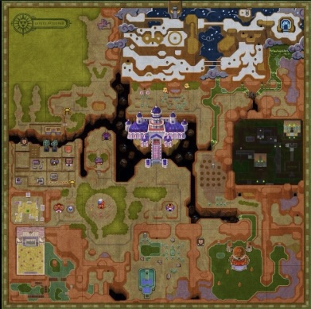
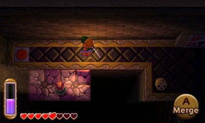

Experiment 4 - Infinite Worlds
Description
The overworld takes inspiration from The "Legend of Zelda: Link Between Worlds", of Lorule's overworld. It gave me ispiration to do a dark themed overworld: 
The dungeon takes inspiration from The "Legend of Zelda: Link Between Worlds", of the dark temple in Lorule. This image is one of the rooms in the temple and gave me iniratin to do a dark themed dungeon:
Technical
The drawGrid function visualizes the grid using the placeTile function, and applies autotiling to create smoother transitions. This function also applies visual effects, such as animated water bubbles.
Overworld
"~" for water
"," for plains
"." for grass
"^" for houses
"\*" for trees
Dungeon
"-" for background/grid
"." for rooms
"=" for hallways
"\*" for chests
Reflection
I worked n this by myself, and I think I did a good job. This experiment was fun, it was fun to mess around with the tiles, and to be creative with the design. I did have a hard time understanding austotiling as it's not something I'm too familiar with. I do think that I could have made it look better, but I think this looks really good either way.